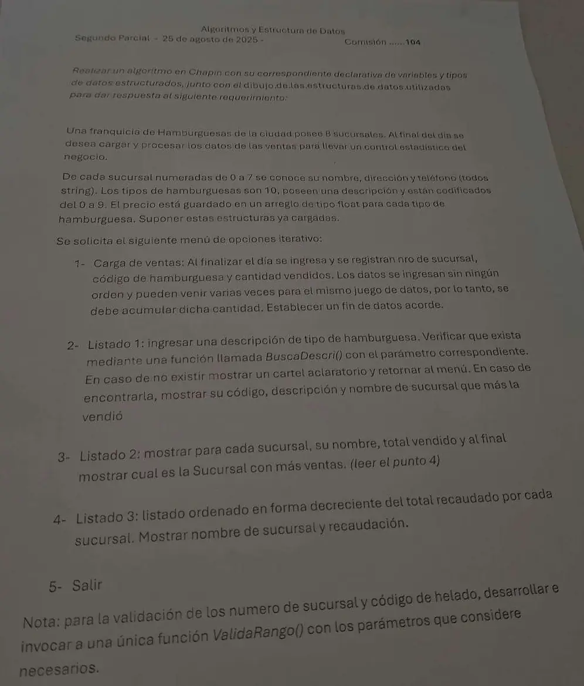

2° parcial, 25/08/2025 (Franquicia de Hamburguesas)
2° parcial, 25/08/2025
Enunciado


Propuesta de respuesta
Respuesta no verificada. La propuso Luta Studios con inteligencia artificial y ningún docente la revisó. Puede tener errores.
La hoja pide el diagrama de Chapin. Va un diagrama por módulo, con su declaración de variables arriba, y primero el del programa principal. Si un diagrama no entra en la pantalla, tocalo para verlo completo. Después de los diagramas está el mismo algoritmo en Python, para que lo puedas probar.
Estructuras de datos
| Estructura | Qué guarda | Índices |
|---|---|---|
nombre, direccion, telefono | Datos de cada sucursal (ya cargados) | 0 a 7, el número de sucursal |
descri | Descripción de cada hamburguesa (ya cargada) | 0 a 9, el código |
precio | Precio de cada hamburguesa (ya cargado) | 0 a 9, el código |
ventas | Cantidad vendida, que se acumula en la carga | Fila 0 a 7 la sucursal, columna 0 a 9 la hamburguesa |
Menú iterativo
1- Carga de ventas
2- Listado 1
3- Listado 2
4- Listado 3, decreciente con arrastre
El mismo algoritmo en Python
Es el programa que se probó, con las mismas sentencias y en el mismo orden que las cajas. Cada Leer del diagrama es un input, convertido a int o float según la declaración, y cada Mostrar es un print.
# Estructuras (ya cargadas, según el enunciado, salvo ventas)
# nombre, direccion, telefono: arreglo [0..7] de str
# descri: arreglo [0..9] de str
# precio: arreglo [0..9] de float
# ventas: matriz [0..7][0..9] de int (sucursal, tipo de hamburguesa)
nombre = [""]*8
direccion = [""]*8
telefono = [""]*8
descri = [""]*10
precio = [0.0]*10
ventas = [[0]*10 for n in range(8)]
def ValidaRango(valor, desde, hasta):
# valor, desde, hasta: int
return valor >= desde and valor <= hasta
def CARGA_VENTAS():
# suc, cod, cant: int
# Fin de datos: sucursal -1
suc = int(input("Sucursal (0 a 7, -1 para terminar): "))
while not ValidaRango(suc, -1, 7):
suc = int(input("Sucursal inválida: "))
while suc != -1:
cod = int(input("Código de hamburguesa (0 a 9): "))
while not ValidaRango(cod, 0, 9):
cod = int(input("Código inválido: "))
cant = int(input("Cantidad vendida: "))
while cant <= 0:
cant = int(input("Tiene que ser mayor que 0: "))
ventas[suc][cod] = ventas[suc][cod] + cant
suc = int(input("Sucursal (0 a 7, -1 para terminar): "))
while not ValidaRango(suc, -1, 7):
suc = int(input("Sucursal inválida: "))
def BuscaDescri(d):
# d: str
# i: int
i = 0
while i < 9 and descri[i] != d:
i = i + 1
if descri[i] == d:
return i
else:
return -1
def LISTADO_1():
# d: str
# cod, s, sMax: int
d = input("Descripción: ")
cod = BuscaDescri(d)
if cod == -1:
print("No existe esa hamburguesa")
else:
sMax = 0
for s in range(1, 8):
if ventas[s][cod] > ventas[sMax][cod]:
sMax = s
print(cod, descri[cod], "- la vendió más:", nombre[sMax])
def TOTAL_SUCURSAL(s):
# s, h: int
# tot: float
tot = 0
for h in range(10):
tot = tot + ventas[s][h] * precio[h]
return tot
def LISTADO_2():
# s, sMax: int
# tot, totMax: float
sMax = 0
totMax = -1
for s in range(8):
tot = TOTAL_SUCURSAL(s)
print(nombre[s], tot)
if tot > totMax:
totMax = tot
sMax = s
print("Sucursal con más ventas:", nombre[sMax])
def LISTADO_3():
# totAux: arreglo [0..7] de float
# nomAux: arreglo [0..7] de str
# i, k: int
# auxT: float
# auxN: str
totAux = [0.0]*8
nomAux = [""]*8
for i in range(8):
totAux[i] = TOTAL_SUCURSAL(i)
nomAux[i] = nombre[i]
for i in range(7):
for k in range(i + 1, 8):
if totAux[i] < totAux[k]:
auxT = totAux[i]
totAux[i] = totAux[k]
totAux[k] = auxT
auxN = nomAux[i]
nomAux[i] = nomAux[k]
nomAux[k] = auxN
for i in range(8):
print(nomAux[i], totAux[i])
# Programa principal
# opcion: int
opcion = 0
while opcion != 5:
print("1- Carga de ventas")
print("2- Listado 1")
print("3- Listado 2")
print("4- Listado 3")
print("5- Salir")
opcion = int(input("Opción: "))
while not ValidaRango(opcion, 1, 5):
opcion = int(input("Opción inválida: "))
match opcion:
case 1:
CARGA_VENTAS()
case 2:
LISTADO_1()
case 3:
LISTADO_2()
case 4:
LISTADO_3()Respuesta no verificada. Puede tener errores.
Se armó con la hoja del examen y la página del 2° parcial (parámetros, arreglos, búsquedas, ordenamiento con arrastre y funciones que solo se invocan). Los arreglos se declaran como en las preguntas frecuentes de los TP 2024. El Chapin sigue la forma de las diapositivas del examen de Historia Clínica de 2019.
Quedó en duda: La nota habla de «código de helado». Se tomó como el código de hamburguesa. «Total vendido» del listado 2 se leyó como plata (cantidad por precio). La consigna dice «leer el punto 4», y el punto 4 habla de lo recaudado. El fin de datos es la sucursal -1, y ValidaRango la acepta solo para cortar la carga. El dibujo de las estructuras que pide la hoja va como tabla. Si dos sucursales empatan en el máximo, sale la primera. Las diapositivas de la materia no muestran en Chapin la lectura de datos ni la selección múltiple. Acá van como Leer y como Según, con una columna por caso.
¿Cómo te fue?
Marcá cada tema del examen.
- ArreglosArreglos, en 2° parcial
- FuncionesFunciones que el enunciado pide invocar, en 2° parcial
- OrdenamientoOrdenamiento, en 2° parcial